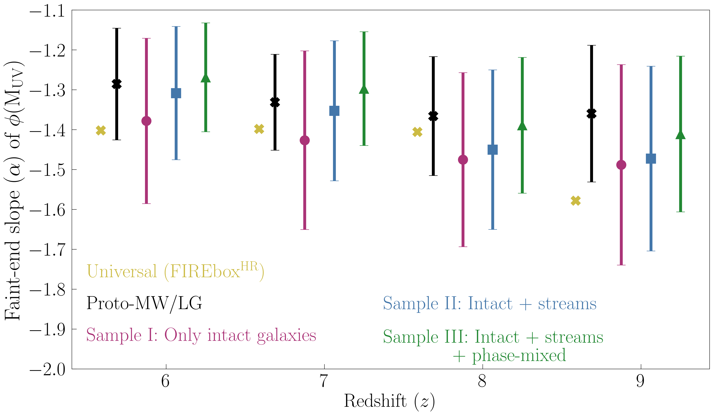

Near-Field Cosmology | Reionization | Stellar Streams | High Redshift Galaxies
Overview
My research focuses on understanding the first galaxies and their environment during the Epoch of Reionization (EoR). I approach this using both the present-day and high-redshift galaxies through cosmological simulations. Using the present-day intact and disrupted low-mass galaxies around Milky Way (MW)/Local Group (LG)-like host galaxies, I infer the properties of their ancient progenitors during EoR. I have also built semi-analytical models of Lyman-alpha emission from the high-redshift galaxies in large-scale simulations to understand the interplay between these ionizing sources and their surrounding intergalactic medium (IGM) to interpret the recent and upcoming JWST and Roman observations. By combining these two complementary approaches, I seek to answer the fundamental questions about the reionization history of our Universe - When was the Universe reionized?, How was the Universe reionized?, and What were the sources of reionization?

Probing reionization with present-day disrupted galaxies
Progenitors of present-day disrupted galaxies such as stellar streams and phase-mixed objects contributed significantly to the total ionizing photon budget during the Epoch of Reionization. Using the FIRE-2 cosmological zoom-in simulations, I have shown that including the present-day disrupted galaxies along with the intact ones improves the constraints on the faint-end slope of the UV luminosity function during reionization.